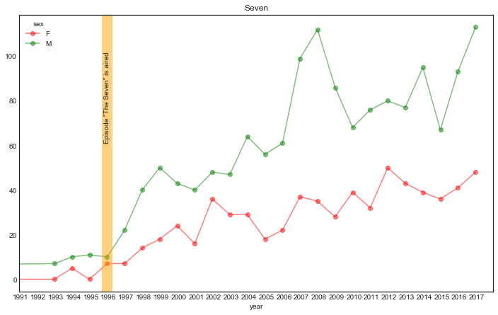
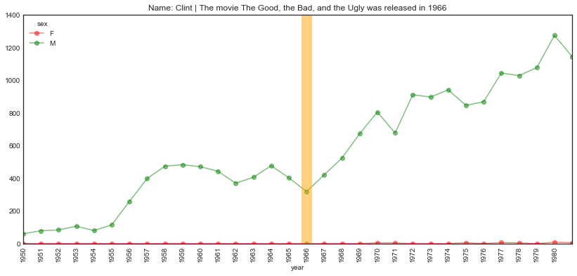
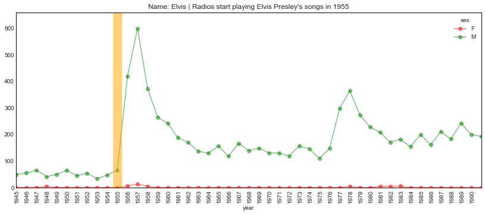
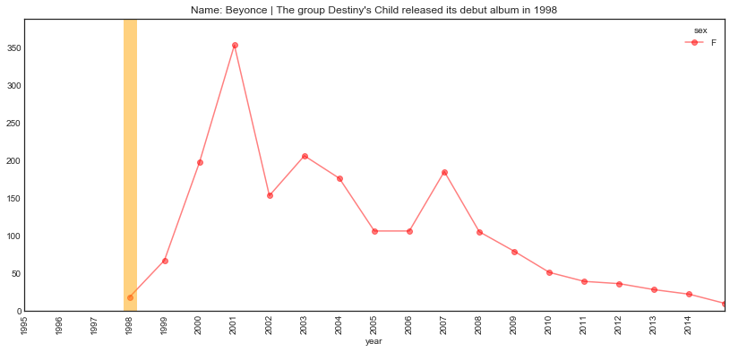

In this post I want to take a look at a classic data set: the US baby names.
While the origin of many names can be found in popular culture and (what's the alternative to popular culture? impopular culture?) elsewhere, we shall focus on how the TV show Seinfeld may have influenced the naming of hundreds of innocent babies.
We'll roughly follow the steps outlined by Wes McKinney in his excellent book Python for Data Analysis to load the data.
Let's first start by importing a couple of modules.
from math import *
import numpy as np
import pandas as pd
import os
from pathlib import Path
%matplotlib inline
import matplotlib.pyplot as plt
import matplotlib as mpl
plt.style.use('seaborn-white')
from IPython.core.display import display, HTML
display(HTML("<style>.container { width:100% !important; }</style>")) A. Loading the data
The dataset can be downloaded from http://www.ssa.gov/oact/babynames/limits.html.
(Follow the link and download the dataset in the datasets directory, in a directory called names, and unzip it).
The dataset contains the top 1000 most popular names starting in 1880.
The data for each year is in its own text file. For instance, the data for 1880 is in the file yob1880.txt (which should
be located in the datasets/names/ folder.)
The first thing to do is merge the data for all the different years into a single dataframe, however, as a warm up, let’s look at the data for a single year.
input_path = Path('data/names/yob1880.txt')
!head {input_path}Mary,F,7065
Anna,F,2604
Emma,F,2003
Elizabeth,F,1939
Minnie,F,1746
Margaret,F,1578
Ida,F,1472
Alice,F,1414
Bertha,F,1320
Sarah,F,1288names1880 = pd.read_csv(input_path, names=['name', 'sex', 'births'])
names1880.head()| name | sex | births | |
|---|---|---|---|
| 0 | Mary | F | 7065 |
| 1 | Anna | F | 2604 |
| 2 | Emma | F | 2003 |
| 3 | Elizabeth | F | 1939 |
| 4 | Minnie | F | 1746 |
Let’s try to automate the loading of all the files.
First we need a list of all the files in our directory.
A Path object has a glob method that returns a generator with the elements within a given directory.
dataset_dir = Path('data/names')
files = [item.name for item in sorted(dataset_dir.glob("*.txt"))]
# Extract a list of years
years = [item[3:7] for item in files]We gather the data into a single dataset in two steps:
- We create a list of dataframes where each element corresponds to a particular year.
- We concatenate all the data (why can’t we use merge here?) into a single dataframe.
L = []
for file, year in zip(files, years):
path = Path(dataset_dir, file)
df = pd.read_csv(path, names=['name', 'sex', 'births'])
df['year'] = year
L.append(df)
names = pd.concat(L)
names.head()| name | sex | births | year | |
|---|---|---|---|---|
| 0 | Mary | F | 7065 | 1880 |
| 1 | Anna | F | 2604 | 1880 |
| 2 | Emma | F | 2003 | 1880 |
| 3 | Elizabeth | F | 1939 | 1880 |
| 4 | Minnie | F | 1746 | 1880 |
It's always a good idea to check the data types of our features (columns). Don't assume that the data you downloaded is in the right format.
If we fix any issue early, it'll make the analysis a lot easier.
names.dtypesname object
sex object
births int64
year object
dtype: objectThe year feature is of type object which is Python’s way of telling us it’s got a generic datatype.
We’d like it to be a datetime type so let’s fix that.
Pandas has several features that make manipulating date and timestamp objects easy.
(We’ll also change the type of sex to category while we’re at it)
names['year'] = pd.to_datetime(names['year'])
names['sex'] = names.sex.astype('category')names.head()| name | sex | births | year | |
|---|---|---|---|---|
| 0 | Mary | F | 7065 | 1880-01-01 |
| 1 | Anna | F | 2604 | 1880-01-01 |
| 2 | Emma | F | 2003 | 1880-01-01 |
| 3 | Elizabeth | F | 1939 | 1880-01-01 |
| 4 | Minnie | F | 1746 | 1880-01-01 |
Notice how our year column has been changed into a datetime object.
By default, since we only specified the year, the datetime object is set at time 00:00:00 on the 1st of January.
names.dtypesname object
sex category
births int64
year datetime64[ns]
dtype: object B. Exploring the data
So how big is our dataset?
names.count()name 1924665
sex 1924665
births 1924665
year 1924665
dtype: int64How is the data split on the sex of the baby?
names.sex.value_counts()F 1138293
M 786372
Name: sex, dtype: int64Let’s get percentages.
names.sex.value_counts(normalize=True).apply(lambda x: f'{x*100:.0f}%')F 59%
M 41%
Name: sex, dtype: objectLet’s find the total number of births for each year, for both sexes.
total_births_per_year_per_sex = names.pivot_table('births', index='year', columns='sex', aggfunc=sum)total_births_per_year_per_sex.head()| sex | F | M |
|---|---|---|
| year | ||
| 1880-01-01 | 90993 | 110491 |
| 1881-01-01 | 91953 | 100743 |
| 1882-01-01 | 107847 | 113686 |
| 1883-01-01 | 112319 | 104627 |
| 1884-01-01 | 129020 | 114442 |
Note:
The pivot_table method is just a convenient shortcut for a groupby operation.
names.groupby(['year', 'sex']).births.sum().unstack().head()| sex | F | M |
|---|---|---|
| year | ||
| 1880-01-01 | 90993 | 110491 |
| 1881-01-01 | 91953 | 100743 |
| 1882-01-01 | 107847 | 113686 |
| 1883-01-01 | 112319 | 104627 |
| 1884-01-01 | 129020 | 114442 |
total_births_per_year_per_sex.plot(figsize=(12, 6),
title="Total births by sex and year",
lw=3,
color=('r', 'g'),
alpha=0.5);How many unique names are there for each year and gender?
unique_names = names.groupby(['year', 'sex'])['name'].nunique().unstack()unique_names.plot(figsize=(12, 6), title="Unique names by sex and year", lw=3, color=('r', 'g'), alpha=0.5);How many names from 1880 were still used in the most recent year we have, and which ones have fallen into desuetude?
last_year = names.year.dt.year.max()
s1880 = set(names[names.year.dt.year == 1880]['name'].unique())
slast = set(names[names.year.dt.year == last_year]['name'].unique())
print(f"""
There were {len(s1880)} distinct names recorded in 1880
There were {len(slast)} distinct names recorded in {last_year}\n
{len(slast.intersection(s1880))} names were found in both years
{len(s1880.difference(slast))} names found in 1880 were not recorded in {last_year}
{len(slast.difference(s1880))} names found in {last_year} were not recorded in 1880
""")
print(f"The names recorded in 1880 but no longer in use in {last_year} are:\n\n",
sorted([item for item in s1880.difference(slast)]))There were 1889 distinct names recorded in 1880
There were 29910 distinct names recorded in 2017
1501 names were found in both years
388 names found in 1880 were not recorded in 2017
28409 names found in 2017 were not recorded in 1880
The names recorded in 1880 but no longer in use in 2017 are:
['Ab', 'Adelbert', 'Adline', 'Adolf', 'Adolphus', 'Agustus', 'Albertina', 'Albertine', 'Albertus', 'Alcide', 'Alda', 'Alf', 'Algie', 'Almeda', 'Almer', 'Almon', 'Alonza', 'Alpheus', 'Altha', 'Alvah', 'Alvena', 'Alverta', 'Alvia', 'Anner', 'Annis', 'Araminta', 'Arch', 'Ardelia', 'Ardella', 'Arminta', 'Arther', 'Arvid', 'Arvilla', 'Asberry', 'Asbury', 'Aurthur', 'Auther', 'Author', 'Authur', 'Babe', 'Ballard', 'Bama', 'Barnett', 'Barney', 'Bart', 'Bedford', 'Bena', 'Benjaman', 'Benjamine', 'Bertie', 'Berton', 'Bertram', 'Bess', 'Besse', 'Bettie', 'Bird', 'Birt', 'Birtha', 'Birtie', 'Blanch', 'Budd', 'Buford', 'Bulah', 'Burley', 'Burr', 'Butler', 'Byrd', 'Caddie', 'Celie', 'Ceylon', 'Chalmers', 'Chancy', 'Charlotta', 'Chas', 'Chin', 'Christena', 'Cicero', 'Cinda', 'Clarance', 'Clarinda', 'Classie', 'Claud', 'Claudie', 'Claudine', 'Claus', 'Clemie', 'Clemmie', 'Cloyd', 'Clyda', 'Colonel', 'Commodore', 'Concepcion', 'Corda', 'Cordella', 'Cordia', 'Cordie', 'Corine', 'Cornelious', 'Creola', 'Dee', 'Dellar', 'Dewitt', 'Dicie', 'Dick', 'Dillard', 'Dillie', 'Docia', 'Dock', 'Doctor', 'Dolphus', 'Donie', 'Dosha', 'Doshia', 'Doshie', 'Dow', 'Drucilla', 'Drusilla', 'Duff', 'Earle', 'Early', 'Edd', 'Edmonia', 'Ednah', 'Edyth', 'Effa', 'Eldora', 'Electa', 'Elick', 'Eliga', 'Eligah', 'Elige', 'Elizebeth', 'Ellar', 'Elmire', 'Elmo', 'Elmore', 'Elzie', 'Emmer', 'Eola', 'Ephriam', 'Erasmus', 'Erastus', 'Ernst', 'Estell', 'Estie', 'Etha', 'Ethelyn', 'Ethyl', 'Etna', 'Etter', 'Fayette', 'Ferd', 'Finis', 'Firman', 'Flem', 'Fleming', 'Florance', 'Florida', 'Flossie', 'Floy', 'Freda', 'Friend', 'Frona', 'Fronie', 'Fronnie', 'Garfield', 'Gee', 'Gorge', 'Gottlieb', 'Green', 'Guss', 'Gussie', 'Gust', 'Gustavus', 'Hamp', 'Handy', 'Hardie', 'Harl', 'Harrie', 'Harriette', 'Harve', 'Hassie', 'Hedwig', 'Helma', 'Hence', 'Hermann', 'Hermine', 'Hessie', 'Hester', 'Hettie', 'Hillard', 'Hilliard', 'Hilma', 'Holmes', 'Hortense', 'Hosteen', 'Hoy', 'Hulda', 'Huldah', 'Hyman', 'Icy', 'Idell', 'Irven', 'Isham', 'Izora', 'Jennette', 'Josiephine', 'Junious', 'Kittie', 'Kizzie', 'Knute', 'Lafe', 'Lavenia', 'Lavonia', 'Lawyer', 'Leatha', 'Leitha', 'Lem', 'Lemma', 'Lessie', 'Letha', 'Letitia', 'Letta', 'Lew', 'Lewie', 'Liddie', 'Lidie', 'Lige', 'Liller', 'Lillis', 'Lissie', 'Littie', 'Lollie', 'Loma', 'Lon', 'Lonie', 'Lotta', 'Louetta', 'Loula', 'Louvenia', 'Lovisa', 'Ludie', 'Lue', 'Lugenia', 'Lular', 'Lulie', 'Lum', 'Lutie', 'Luvenia', 'Madge', 'Madie', 'Madora', 'Mal', 'Malvina', 'Mammie', 'Manda', 'Manerva', 'Manervia', 'Manford', 'Manie', 'Manley', 'Manly', 'Margaretta', 'Margeret', 'Mart', 'Mat', 'Math', 'Matie', 'Maymie', 'Media', 'Melville', 'Mertie', 'Merton', 'Meta', 'Mettie', 'Mignon', 'Milford', 'Mima', 'Minda', 'Miner', 'Minervia', 'Minor', 'Minta', 'Mintie', 'Missouri', 'Mittie', 'Mont', 'Mortimer', 'Morton', 'Mozella', 'Myrta', 'Myrtie', 'Myrtle', 'Nan', 'Nannie', 'Nat', 'Nealie', 'Neppie', 'Nimrod', 'Nolie', 'Nonie', 'Norval', 'Ocie', 'Octave', 'Oda', 'Olie', 'Omie', 'Onie', 'Oral', 'Orie', 'Orilla', 'Orley', 'Orpha', 'Orrie', 'Orval', 'Osie', 'Ossie', 'Otelia', 'Otha', 'Otho', 'Ottie', 'Pansy', 'Paralee', 'Pat', 'Pattie', 'Pearlie', 'Perley', 'Permelia', 'Pink', 'Pinkey', 'Pinkie', 'Pinkney', 'Pleas', 'Pleasant', 'Ples', 'Pollie', 'Press', 'Redden', 'Rella', 'Reta', 'Rice', 'Rillie', 'Roena', 'Rolla', 'Rosia', 'Rube', 'Sannie', 'Sim', 'Squire', 'Sudie', 'Sybilla', 'Sylvanus', 'Tella', 'Tempie', 'Tennie', 'Teressa', 'Theda', 'Theophile', 'Thursa', 'Tilmon', 'Tishie', 'Tobe', 'Ula', 'Vannie', 'Venie', 'Verdie', 'Vern', 'Verne', 'Vernie', 'Vertie', 'Viney', 'Virgie', 'Volney', 'Wash', 'Watt', 'Weaver', 'Wilburn', 'Wilda', 'Wilhelmine', 'Willam', 'Wm', 'Wong', 'Wood', 'Woodie', 'Worthy', 'Yee', 'Yetta', 'Zilpha'] C. Data Exploration
Let's extract the names that were given to both male and female babies and put it in a list named both.
s1 = set(names[names.sex == 'F']['name'])
s2 = set(names[names.sex == 'M']['name'])
both = list(s1.intersection(s2))print(f"{len(both)} names in our dataset were given to both boys and girls. \n\n Here's a sample:\n")
print(" | ".join(list(both)[:100]))10663 names in our dataset were given to both boys and girls.
Here's a sample:
Ovis | Honor | Honore | Brandyn | Dorcus | Michel | Million | Donavan | Kemonie | Alie | Shalom | Sagan | Maeson | Kharis | Tenny | Daron | Madeline | Torey | Dandy | Nasir | Lavorn | Tracey | Ali | Kanya | Huey | Hershel | Kiren | Unnamed | Mose | Dakari | Navid | Krystian | Koi | Giavonni | Justine | Kamar | Derrell | Rajdeep | Leyton | Mong | Seattle | Vader | Anias | Camaree | Zimri | Khamauri | Jireh | Choyce | Cleo | Marki | Keontay | Shakari | Amarie | Jrue | Refugia | Luster | Levorn | Dillon | Joie | Dalas | Son | Graham | Samie | Larson | Kylynn | Kearney | Dejah | Teegan | Jahzel | Brunell | Delijah | Asiyah | Taelin | Rafa | Edward | Essie | Kenzie | Kwan | Honour | Britney | Shirl | Dara | Berthal | Keymoni | Madelyn | Dorey | Trinell | Maury | Skyylar | Courtnay | Lyncoln | Modie | Octavious | Jaice | Snow | Domique | Eva | Jeremy | Kobee | SaeUpon a more careful examination of the whole output, some interesting observations can be made.
For instance I would expect names like Lucille to be only given to girls (or B.B. King's guitar), but according to our result, these names were also given to boys.
On the other hand, while to me the name Basil may evoke a cantankerous hotel manager in Torquay, apparently, some parents thought it the perfect moniker for their baby girl. Similarly, the name Sylvester was given to both boys and girls.
Let's have a closer look.
names[names.name == 'Lucille'].head()| name | sex | births | year | |
|---|---|---|---|---|
| 248 | Lucille | F | 40 | 1880-01-01 |
| 223 | Lucille | F | 48 | 1881-01-01 |
| 170 | Lucille | F | 85 | 1882-01-01 |
| 220 | Lucille | F | 66 | 1883-01-01 |
| 188 | Lucille | F | 94 | 1884-01-01 |
In how many years does the name Lucille appear for either boys or girls?
names[names.name == 'Lucille']['sex'].value_counts()F 138
M 49
Name: sex, dtype: int64Note:
Note that this is not the number of babies of each sex with that name.
We've grouped the data by year and sex so this count corresponds to the number of years in which at least five babies of either gender were named Lucille (5 being the yearly threshold beyond which a name isn't recorded in the data set).
We can compute the same information for other names.
names[names.name == 'Basil']['sex'].value_counts()M 138
F 13
Name: sex, dtype: int64names[names.name == 'Sylvester']['sex'].value_counts()M 138
F 62
Name: sex, dtype: int64names[names.name == 'Hannah']['sex'].value_counts()F 138
M 38
Name: sex, dtype: int64Let’s get the total number of babies named Basil for any given year?
basil = names[names.name == 'Basil'].pivot_table('births',
index='year',
columns='sex',
fill_value=0,
aggfunc=np.sum )
basil.head()| sex | F | M |
|---|---|---|
| year | ||
| 1880-01-01 | 0 | 11 |
| 1881-01-01 | 0 | 9 |
| 1882-01-01 | 0 | 12 |
| 1883-01-01 | 0 | 8 |
| 1884-01-01 | 0 | 11 |
Let’s filter out the years where no girl was named Basil.
basil[basil.F != 0]| sex | F | M |
|---|---|---|
| year | ||
| 1919-01-01 | 7 | 262 |
| 1927-01-01 | 5 | 249 |
| 2006-01-01 | 7 | 64 |
| 2008-01-01 | 5 | 31 |
| 2009-01-01 | 7 | 56 |
| 2010-01-01 | 11 | 47 |
| 2011-01-01 | 7 | 44 |
| 2012-01-01 | 20 | 45 |
| 2013-01-01 | 21 | 56 |
| 2014-01-01 | 17 | 44 |
| 2015-01-01 | 16 | 52 |
| 2016-01-01 | 22 | 60 |
| 2017-01-01 | 24 | 58 |
Note that we have 13 years, in agreement with the output of value_counts above.
Let’s visualise this for a couple of names. I’m using a log scale because otherwise only the data for the dominant gender would be visible.
basil.plot(figsize=(12, 6), logy=True, marker='o', lw=0,
color=('red', 'green'), title='Basil',
alpha=0.5);We can daisy chain the name selection and the plotting.
(names[names.name == 'Christina']
.pivot_table('births',
index='year',
columns='sex',
fill_value=0,
aggfunc='sum')
.plot(figsize=(12, 6),
logy=True, marker='o', lw=0,
color=('r', 'g'),
title='Christina',
alpha=0.5)
);
Let’s put that code into a function to make it more convenient and follow the DRY principle.
def timeline_name(name='Basil', use_log=True):
ax = (names[names.name == name]
.pivot_table('births',
index='year',
columns='sex',
fill_value=0,
aggfunc=np.sum)
.plot(figsize=(10, 6),
logy=use_log,
marker='o',
lw=1,
color=('r', 'g'),
alpha=0.5)
)
ax.set_xlabel('year', fontsize=14)
ax.set_ylabel('count', fontsize=14)
ax.set_title(name, fontsize=16)timeline_name('Lucille')timeline_name('Hannah')
D. The Seinfeld effect?
Note that a plausible explanation of why the dominant gender for a given name may have changed over the years can sometimes be found relatively easily, as in the case of the name Ashley...
For other names, a change in popularity may be due to a less conventional reason...
In an episode of Seinfeld George mentions to his friends that should he ever have a kid, he'd name him (or her) Seven, after the jersey number of Yankee baseball player Mickey Mantle.
First, let’s check whether “Seven” is in our data set.
'Seven' in names.name.unique()TrueGiddy up!
The Seinfeld episode was aired in 1996.
Let’s see if there’s any indication that it may have influenced the popularity of the name “Seven”.
First let’s create a date range over which to plot the data.
seinfeldYear = '1996'
start = '1991'
end = '2018'
# Let's create a range of dates from start to end.
date_range = pd.date_range(start, end, freq='A-JAN')date_rangeDatetimeIndex(['1991-01-31', '1992-01-31', '1993-01-31', '1994-01-31',
'1995-01-31', '1996-01-31', '1997-01-31', '1998-01-31',
'1999-01-31', '2000-01-31', '2001-01-31', '2002-01-31',
'2003-01-31', '2004-01-31', '2005-01-31', '2006-01-31',
'2007-01-31', '2008-01-31', '2009-01-31', '2010-01-31',
'2011-01-31', '2012-01-31', '2013-01-31', '2014-01-31',
'2015-01-31', '2016-01-31', '2017-01-31'],
dtype='datetime64[ns]', freq='A-JAN')Let’s visualise the trend for “Seven”.
# The data
data = (names[names.name == 'Seven']
.pivot_table('births',
index='year',
columns='sex',
fill_value=0,
aggfunc=np.sum)
)
# The base plot
ax = data.plot(figsize=(12, 8),
logy=False,
marker='o',
color=('r', 'g'),
alpha=0.5,
title='Seven',
grid=False)
# The vertical strip
ax.axvline(seinfeldYear, ymin=0, ymax=1000, lw=15, color='orange', alpha=0.5)
ax.set_xticks(date_range)
ax.set_xlim([start, end])
# Ensure that the labels on the x axis match the years.
ax.set_xticklabels(date_range.year, rotation=0, ha='center' )
# Annotate the figure with some text by specifying location using xy parameter
ax.annotate('Episode "The Seven" is aired',
xy=(pd.to_datetime(seinfeldYear, format="%Y"), 100),
xycoords='data',
rotation=90,
horizontalalignment='center'
)
plt.show()
Note that this does not prove that the show "created" the name fad (correlation ≠ causation and all that; there could be another reason behind both the increase in popularity of the name, and the use of the name in the show), but it does seem to indicate that it enhanced it...
Poor kids! Serenity now!
E. Mom & Pop culture
While we’re on this topic, can we find other possible influences of pop culture in the data set?
Let’s create a general function that we can use to plot various trends.
def plot_name_event(data = names, name="Seven",
year='1996', start='1968', end='2013',
event = '', freq='A-JAN'):
date_range = pd.date_range(start, end, freq=freq)
data = (names[names.name == name]
.pivot_table('births',
index='year',
columns='sex',
fill_value=0,
aggfunc='sum')
)
ax = data.plot(figsize=(14, 6),
logy=False,
marker='o',
color=('r', 'g'),
alpha=0.5,
title = f"Name: {name} | {event} in {year}",
grid=False)
ax.axvline(year, ymin=0, ymax=data.max().max(), lw=15, color='orange', alpha=0.5)
ax.set_xticks(date_range)
ax.set_xlim([start, end])
ax.set_ylim([0, data.loc[data.index <= date_range[-1]].max().max()*1.1])
ax.set_xticklabels(date_range.year, rotation=90, ha='center' )
plt.show()First, let’s look at a few movie characters/actors.
plot_name_event(name="Neo", year='1999', start='1990',
event='The movie The Matrix is released')
plot_name_event(name="Trinity", year='1999', start='1990',
event='The movie The Matrix is released')How about further back in time?
Errol Flynn got his big break in Captain Blood back in 1935. Let’s see if all that swashbuckling influenced parents when it came to naming their progeny.
plot_name_event(name="Errol", year='1935', start='1931', end='1961',
event='The movie Captain Blood is released')Another possible Hollywood influence around the same time.
plot_name_event(name="Hedy", year='1938', start='1915', end='1971',
event="The actress Hedy Lamarr made her Hollywood debut")Earlier still
plot_name_event(name="Greta", year='1925', start='1910', end='1981',
event="The actress Greta Garbo made her Hollywood debut")Of course, we can’t talk about movies without talking about Star Wars.
Let’s see if we can track the names of some of the characters.
plot_name_event(name="Leia", year='1977', start='1970', end='1995',
event='The movie Star Wars is released')plot_name_event(name="Han", year='1977', start='1970', end='2015',
event='The movie Star Wars is released')plot_name_event(name="Lando", year='1977', start='1970', end='2015',
event='The movie Star Wars is released')Hmmmm… A bit surprising.
What about other characters from the trilogy?
Fortunately (for the kids) there doesn’t seem to be any Jabba or Jar Jar in our list… (TBH, I’m mildly disappointed).
characters = {"jabba", "yoda", "chewbacca", "jar jar"}
set(names.name.str.lower().unique()) & charactersset()Let’s look at the main character of another popular movie series.
plot_name_event(name="Indiana", year='1981', start='1970', end='2015',
event="The movie Raiders Of The Lost Ark was released")While on this topic…
plot_name_event(name="Harrison", year='1981', start='1975', end='2015',
event="The movie Raiders Of The Lost Ark was released")In a different genre we also have:
plot_name_event(name="Clint", year='1966', start='1950', end='1981',
event="The movie The Good, the Bad, and the Ugly was released")
We’ve focused on movies, but of course, popular culture’s influence on baby names isn’t limited to movies or television.
Songs or singers can also contribute to the popularity of a given name.
Here are a couple of examples.
plot_name_event(name="Elvis", year='1955', start='1945', end='1991',
event="Radios start playing Elvis Presley's songs")
plot_name_event(name="Michelle", year='1965', start='1960', end='1981',
event='The song Michelle is released by The Beatles')plot_name_event(name="Jermaine", year='1970', start='1960', end='1990',
event="The Jackson 5 top the charts")… And a couple of more recent ones
plot_name_event(name="Beyonce", year='1998', start='1995', end='2015',
event="The group Destiny's Child released its debut album")
Same with sport.
plot_name_event(name="Kobe", year='1996', start='1988', end='2015',
event="NBA player Kobe Bryant made his debut in the league")I’ll stop here, but I’m sure many other interesting patterns can be found in this data set…
As I mentioned earlier, the fact that a name’s increase in popularity coincides with a particular event isn’t enough to demonstrate a causal relationship, however for some of these examples the coincidence is certainly interesting.
In any case, I’d like to think that hundreds, if not thousands, of people owe their moniker to George Costanza.
A sobering thought.
That’s ok. It could have been worse…
"Mulva" in names.name.unique()FalseI had to check!